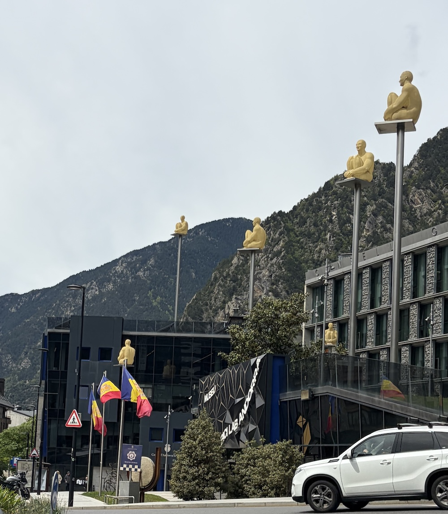
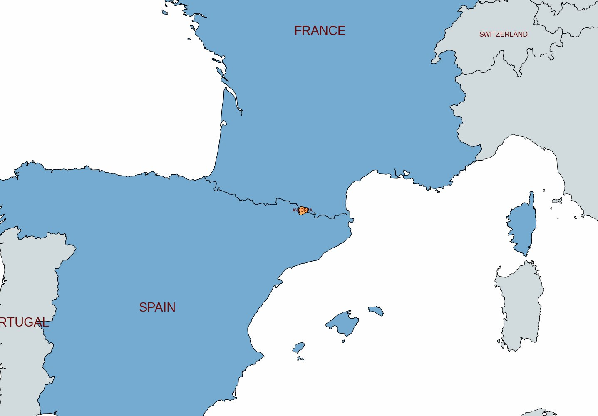
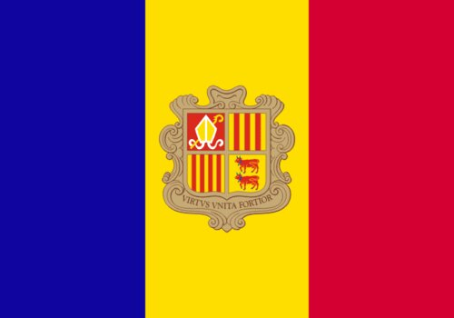
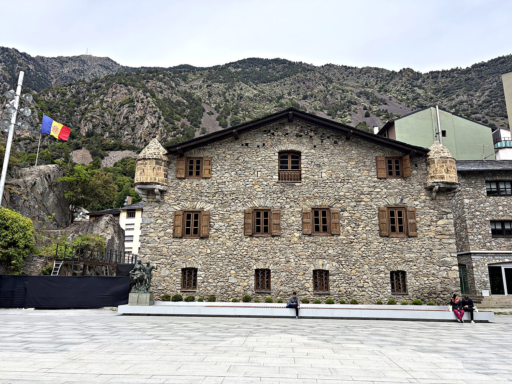
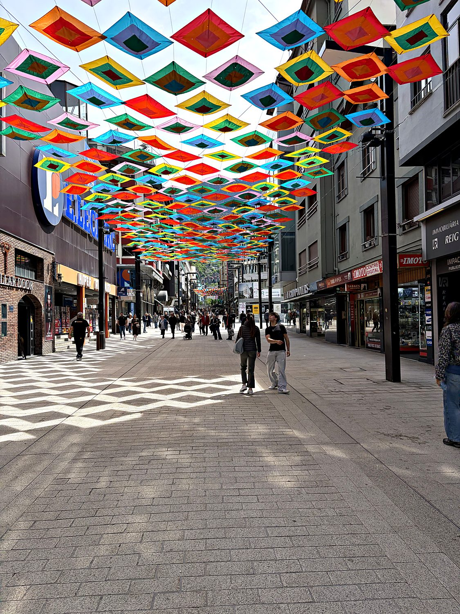
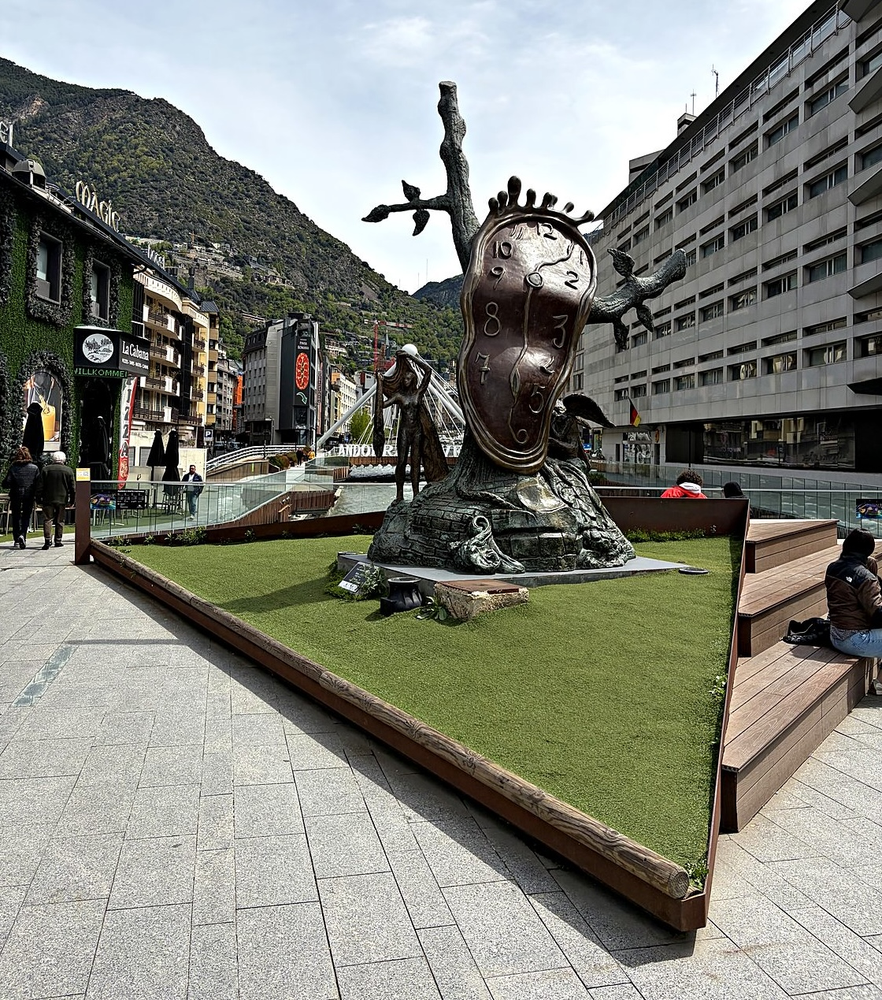

I visited Andorra in May 2026, tacking the tiny Pyrenean country onto the tail end of a trip through Catalonia. The bus ride put me to sleep, and I woke to a windshield full of impossibly green mountains rolling past. My target was the mountain village of Arinsal, since I intended to summit Coma Pedrosa, Andorra's highest peak, the next morning. I decided to forego this adventure due to the snowy conditions on the mountain and my catatonic responses to numerous alarms. The consolation prize was a two hour walk up to a mountain refuge, which was well worth it. The slopes were lush and green, there was still a respectable amount of snow at the junction below the summit, and the fully snow-capped peaks off to the west made for a wonderful view. I jogged back down, caught the L5 bus into the capital, and spent the rest of the day in town on foot.
Andorra la Vella sits at roughly 1km above sea level, which makes it the highest capital city in Europe, and a fitting distinction for a country wedged entirely into the Pyrenees between France and Spain. It is also a very walkable town: the old town is a tidy warren of stone lanes closed to cars, and in less than an hour I looped past the Pont de París bridge, the Romanesque Sant Esteve church, Central Park, and the Rec del Solà, a flat irrigation-canal path that hugs the hillside above town. My favorite discovery was a cluster of golden human figures perched on poles high above one of the squares, gazing down on the shoppers below like calm, glistening guardian angels. I later learned these scultpures are an art installation called the 7 Poets by Catalan artist Jaume Plensa.


Andorra owes its existence to a medieval real-estate dispute. In 1278, after the Count of Foix and the Bishop of Urgell had spent years squabbling over who owned this stretch of mountains, the crown of Aragón brokered a compromise called a paréage: rather than pick a winner, the two would simply share it. That awkward power-sharing arrangement never ended. When the rights of the Count of Foix eventually passed to the French crown, the French head of state inherited the title too. This is why, to this day, Andorra is a co-principality jointly ruled by two people who have never governed together and mostly forget the arrangement exists: the Bishop of Urgell, in Spain, and the President of France. Emmanuel Macron is, technically, a sovereign prince of a nation of some 85,000 people, a fact I suspect pleases him more than he lets on.

For most of its history Andorra was poor, isolated, and quietly getting by on smuggling tobacco over the mountains. That changed dramatically in the 20th century. In 1993 the country finally adopted a written constitution, transforming itself from a feudal curiosity into a full parliamentary democracy and joining the United Nations that same year. Meanwhile, Andorra discovered a far more lucrative vocation than smuggling: selling things tax-free. With no historic industry to speak of and precious little farmland, it reinvented itself as a duty-free shopping haven and ski destination, drawing millions of visitors a year from France and Spain. It was such a committed tax haven that it did not introduce a personal income tax until 2015. Even now, the rates would make an accountant weep with joy.
The Casa de la Vall is a handsome stone manor built in 1580 with corner turrets that looks more like a fortified hiking refuge than a seat of government. In 1702 it became the home of the Consell General, Andorra's parliament, and it served in that role for over three centuries until the legislature finally moved into a larger modern building in 2011. For a country whose entire government could once fit inside a house, this little manor is essentially Andorra's Westminster, Capitol, and Versailles rolled into one. I paused in front of it on the plaza, the Andorran flag snapping overhead, and tried to picture three hundred years of national decisions being hashed out in a building smaller than several of the hotels I had walked past that morning.

If the Casa de la Vall is Andorra's past, its pedestrian shopping avenues are its present. Andorra la Vella's main commercial street runs for what feels like miles with peppered perfume, electronics, ski gear, and liquor shops, all trading on the country's famously low taxes. When I visited, the street was roofed with a canopy of hundreds of brightly colored fabric squares strung between the buildings, turning an ordinary shopping run into something closer to a street festival. It is a small, cheerful reminder that modern Andorra's fortunes rest less on the mountains that made it than on the bargain-hunters those mountains now attract.

My favorite piece of the town's public art required a double-take. On a plaza near the river is a bronze sculpture of a melting clock, crowned and sprouting a winged figure – unmistakably the work of Salvador Dalí. Titled The Nobility of Time, it was installed in Andorra la Vella in 2010, and it feels oddly at home here: Dalí was Catalan, and Andorra is the only country in the world where Catalan is the sole official language. A surrealist melting clock, it turns out, is a fittingly strange emblem for this primeval and admirably quaint little country.
